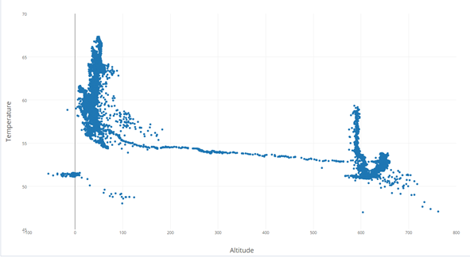
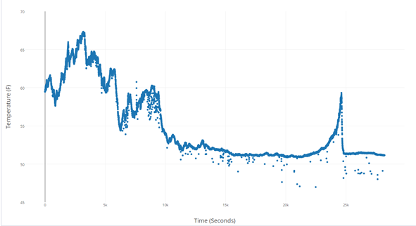

Information
With our system, we can collect many types of atmospheric data and send data to a ground base both wirelessly and in real time. We collected temperature and altitude data to show these communication capabilities. Other sensors could be placed on our platform in order to obtain different types of data, including, air quality, wind speed, light levels, etc.
Temperature vs Altitude
This graph plots temperature(°F) over altitude(ft). In the beginning of the graph (altitude = ~50ft), the balloon is at ground level. At this point we are filling the balloon up with helium, securing the tether, and ensuring communication. We launch the balloon steadily and altitude begins to climb; we receive this data through our Xbee communications wirelessly. The balloon is tethered to remain at an altitude of about 600 ft. We see temperature at or below the initial value (when the balloon first reaches ~630ft). This is expected as the sun goes down and day becomes night. Unfortunately, we believe that our sensors were affected by moisture/ rain during the night. This possibly explains the strange spike in temperature in the graph.
Temperature vs Time
This graph plots temperature (°F) over time (seconds). In the beginning (time <5000s), we are preparing the system for launch and temperature remains around 60-65°F. Then (5000s < time < 6000s) we started the launch of the balloon. We encountered problems with the tether on the ground and were forced to bring the balloon down (6000s < time < 9000s), temperature climbs back to around 60°F. After making adjustments (9000s < time < 11000s), we continue to launch the balloon. As the balloon reaches peak altitude, temperature starts stabilizing around 52°F. At around 23000 seconds, we believe our sensors malfunctioned causing a large spike in temperature. This spike corresponds to the spike in temperature in the graph above. We believe the sensor corrects itself and begins giving accurate data after 25000 seconds.